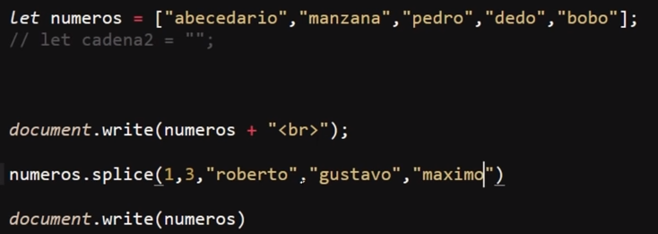
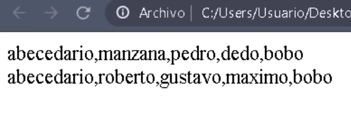

Este método permite eliminar y añadir datos al array al mismo tiempo, para lo cual el método necesita que se definan varios datos.
Los dos primeros del método se tratan de datos numéricos de los cuales el primero corresponde a la posición del array en donde se aplicarán los datos (incluyendo el dato en esa posición), mientras que el segundo número corresponde a la cantidad de datos que serán eliminados del array. Para eliminar datos, este método empieza a recorrer el array desde la posición indicada en el primer dato el número de posiciones indicadas en el segundo dato; por lo tanto, si no se desea eliminar ningún dato basta con indicar el segundo dato del método como "0" ("0" datos a eliminar).
Por otro lado, para añadir datos al array basta con ingresarlos después de los dos datos anteriores del método. Cabe destacar que al ingresar datos también se tendrá en cuenta la posición inicial (primer dato numérico), por lo que los nuevos datos se ingresarán a partir de esa posición, desplazando los viejos o reemplazándolos en el caso de que se hayan definido para que sean eliminados (segundo dato numérico); de este modo se puede añadir nuevos datos a la vez que se eliminan los antiguos.
En otras palabras, este método permite eliminar e ingresar datos al array al mismo tiempo, así como elegir la posición en la que esta modificación se hará.
Ejemplo

Resultado

En este ejemplo el array "números" posee varios valores, los cuales se imprimen en pantalla; luego se aplica el método "splice" indicando que los cambios se realizarán a partir del segundo dato (1), también se indica que se eliminarán los siguientes tres (3) puestos a partir de este y luego se definen los nuevos datos que serán ingresados en el array. Luego de ejecutar el método se imprime en pantalla el nuevo valor del array; de ese modo los valores de la posición dos (1) a la cuatro (3) son reemplazados por los nuevos datos.
Nota: No es necesario ingresar datos a la vez que otros son eliminados; si únicamente se desea eliminar datos, simplemente no se define ningún dato para que sea ingresado. A su vez, si no se desea eliminar ningún dato, basta con colocar el segundo dato numérico en cero (0) y definir los datos a ingresar; de ese modo solo se ingresarán datos pero ninguno se eliminará.
Nota: para ingresar los datos al principio basta con colocar el primer dato numérico del método (posición de los cambios) en cero (0); pero por otro lado, si se desea ponerlos en última posición, este método siempre desplaza el último elemento y lo ubica después de los datos ingresados, por lo que para ingresar datos al último el método "push" es mejor opción.